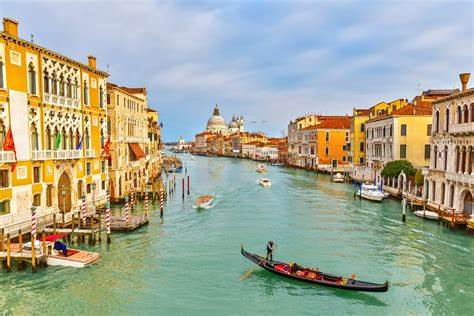
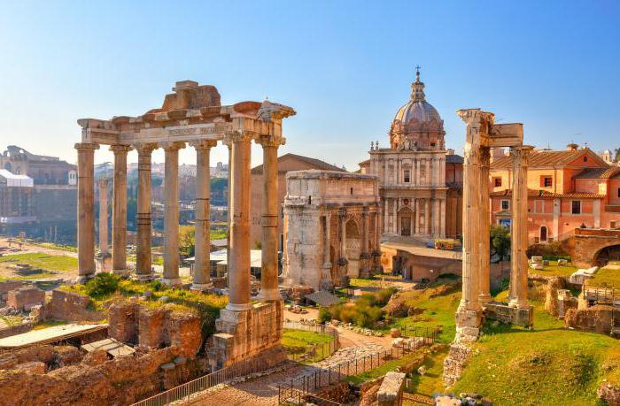
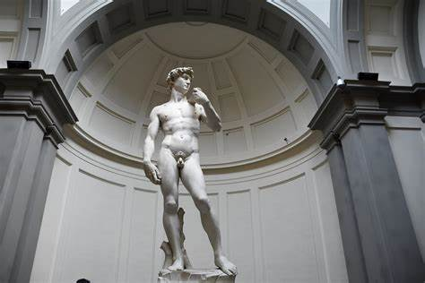

ALOJAMIENTO
LUGARES
VUELOS
COCHES
ALOJAMIENTO
LUGARES
VUELOS
COCHES

Un destino que lo tiene todo
Italia es un país que enamora desde el primer momento. Con una historia milenaria que ha dejado huella en cada rincón, es un verdadero museo al aire libre donde conviven ruinas romanas, palacios renacentistas y calles empedradas llenas de encanto. Su cultura, apasionada y vibrante, se respira en sus plazas, en sus tradiciones y en su arte, que ha influido profundamente en el mundo entero.
La gastronomía italiana es otro de sus grandes tesoros: desde una auténtica pizza napolitana hasta una pasta casera en la Toscana, cada región ofrece sabores únicos que conquistan el paladar. Además, el estilo de vida italiano, relajado y lleno de carácter, invita a disfrutar de cada momento, ya sea tomando un café en una terraza o viendo el atardecer junto al mar.
Italia es también sinónimo de moda, diseño y buen gusto, y ofrece una gran diversidad de paisajes: desde los Alpes del norte hasta las playas del sur, pasando por pueblos pintorescos, viñedos interminables y ciudades llenas de vida como Roma, Florencia o Venecia.
Un viaje a Italia es una experiencia que se vive con los cinco sentidos… y se queda en el corazón para siempre.
Descubre Italia a Través de su Cocina: Un Festín para los Viajeros.

Una tierra que ha inspirado al mundo con su arte, su legado y su pasión por la belleza.
 